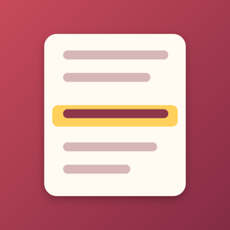

RowlineHelp and Support
Write to mrrasitsahin@icloud.com. Answers usually within two days.
Frequently asked
Rowline reads labels like “Row 12”, “Rnd 3”, “Reihe 4”, “Rang 6” or “Sıra 5”. If your pattern has no labels, open the pattern options, choose “Pin Current Row to a Line” and tap the line. Rowline continues line by line from there.
Add a repeat block such as rows 5–12 × 6. Keep counting every row you knit; Rowline shows which pattern row and which repeat you are on.
Open Projects → Settings → Restore Purchases, signed in with the same Apple Account. Family Sharing is supported for the lifetime purchase.
No subscription is required. Rowline Pro is a one-time purchase; optional monthly and yearly plans exist if you prefer them, and you can cancel them any time in your Apple Account settings.